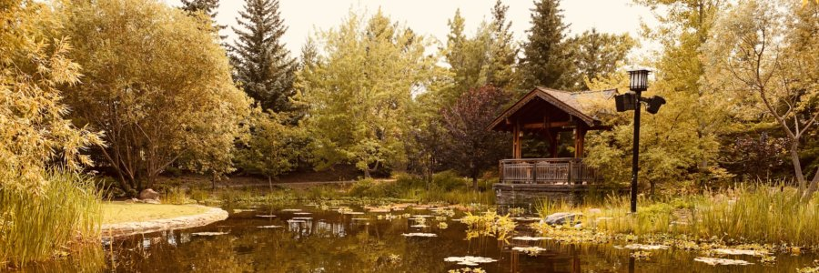
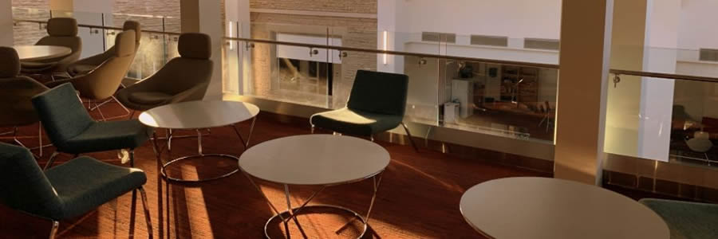

The pandemic year made applying to schools particularly challenging, as many research groups were forced to slow down their work. I consider myself fortunate to have found a supervisor who was continuing to hire during this period. The Canadian Light Source, where I worked, already had a remote work infrastructure in place to accommodate researchers from across Canada who visit for experiments.

I joined a research group at Western for graduate studies without really knowing how grad school worked. At first, my plan was to work as hard as I could and finish my degree as soon as possible. For several reasons, that did not work out and I was stuck there for just a little over two years. Luckily, I was met with an enjoyable group of fellow grad students and by the end, I was sad to leave.
